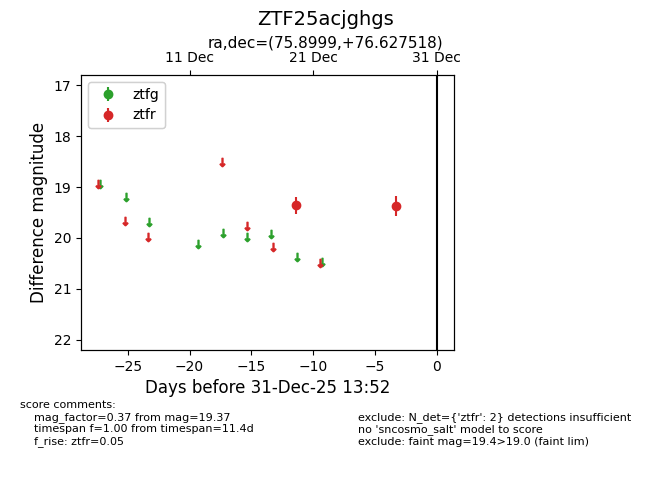
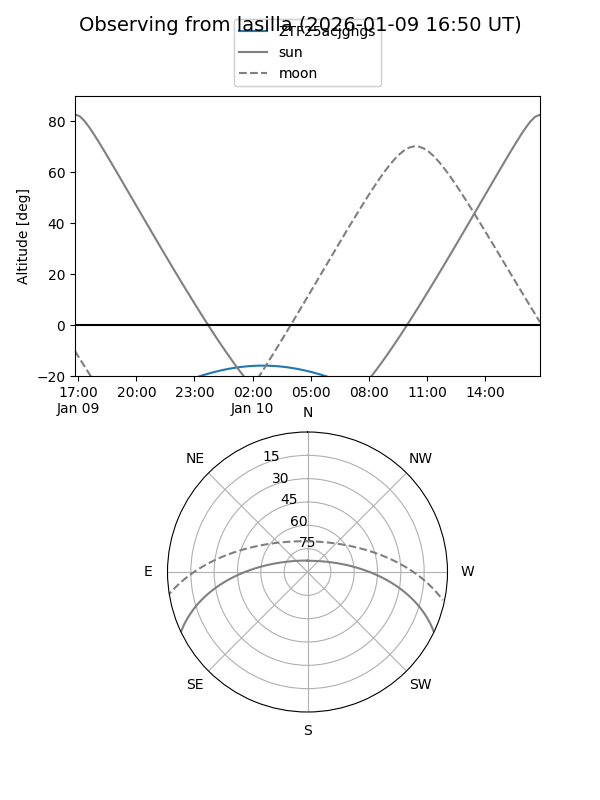
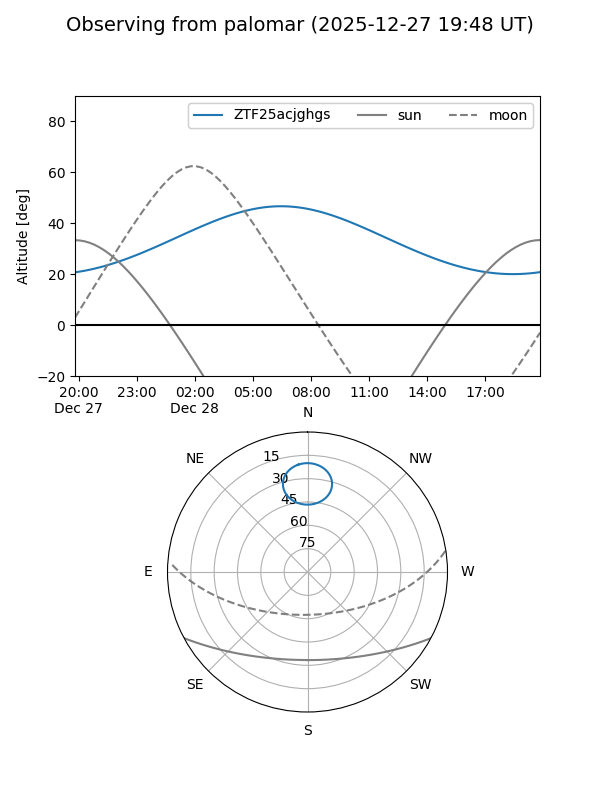

ZTF25acjghgs
Target ZTF25acjghgs at 2025-12-31 17:00
Aliases and brokers:
FINK:
Lasair:
ALeRCE:
alt names
ZTF25acjghgs (ztf,fink_ztf)
Coordinates:
equatorial (ra, dec) = 75.8999,+76.62752
equatorial (HMS+DMS) = 05:03:35.98,+76:37:39.07
galactic (l, b) = (135.6464,+20.50580)
Flags:
Photometry:
last ztfr=19.37
2 ztfr detections
Lightcurve

Visibility


Additional plots